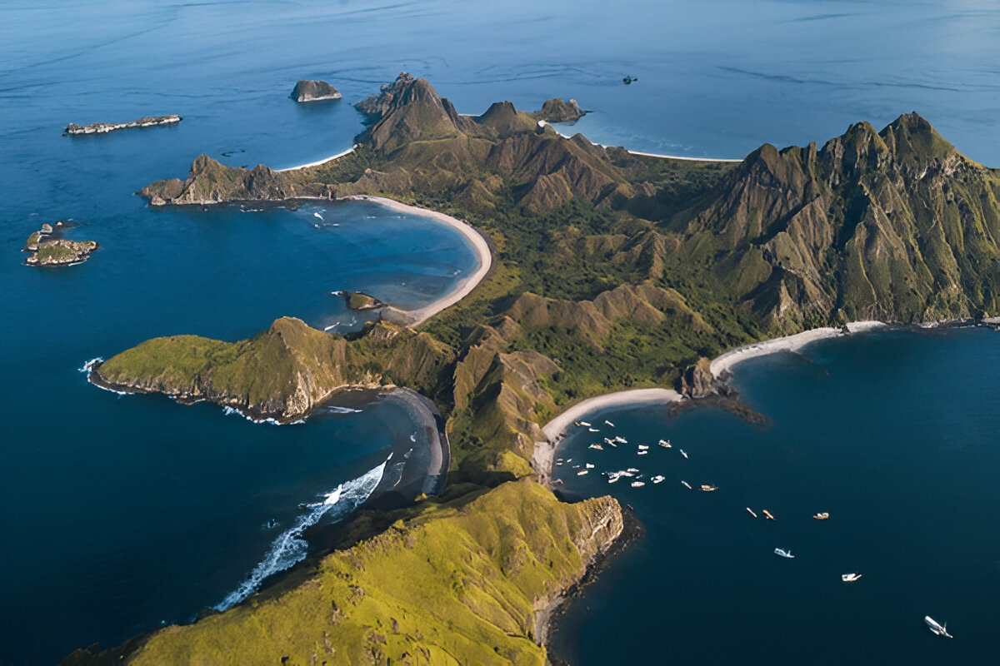

Padar island



Known for its dramatic landscapes and panoramic views, Padar Island features rugged hills, turquoise bays, and beautiful beaches.
The island is famous for its unique, crescent-shaped beaches, which come in shades of pink, white, and black, creating a truly mesmerizing scene.
When you visit Padar Island, one of the must-do activities is hiking to the top of the island’s peak. The hike is a bit challenging but totally worth it for the breathtaking view of the surrounding islands and crystal-clear waters.
Padar Island is a must-see for nature lovers and adventure seekers alike!